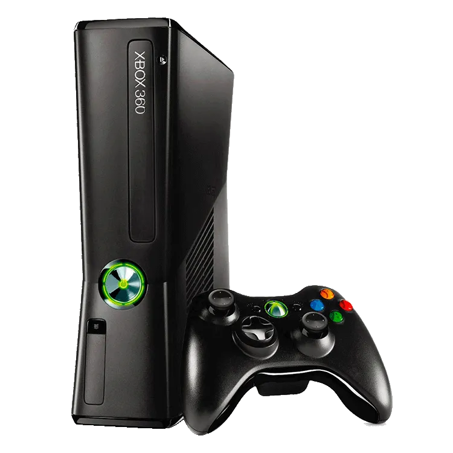
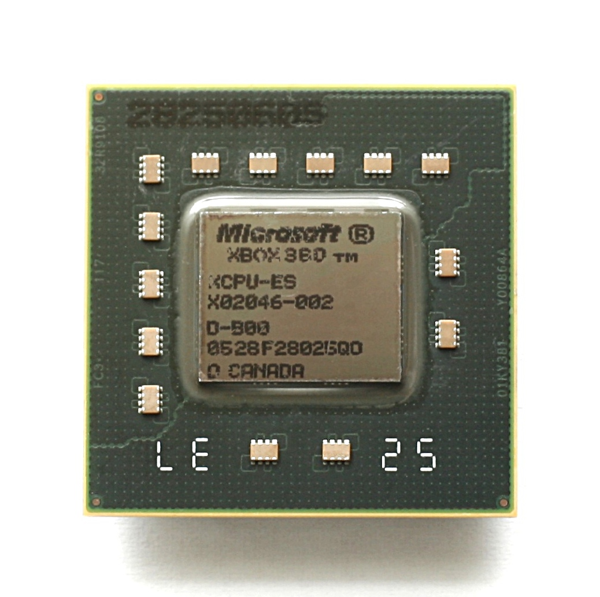
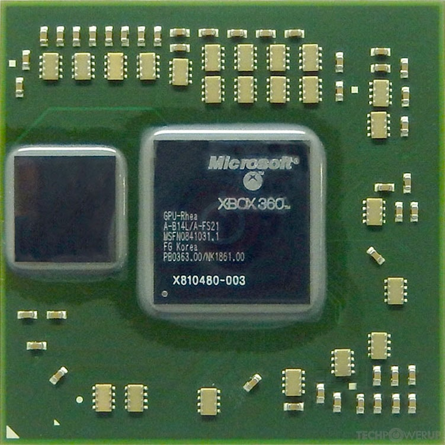
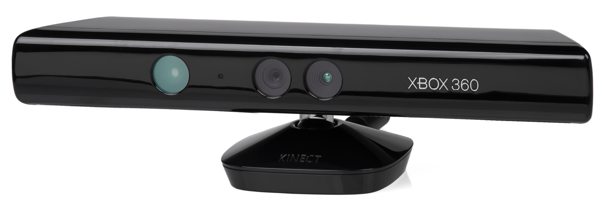
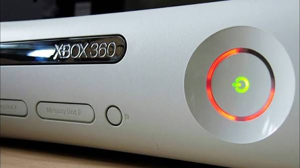

O Xbox 360 é um console de jogos eletrônicos desenvolvido pela Microsoft e sucessor do Xbox original. Foi apresentado oficialmente em maio de 2005 e lançado inicialmente na América do Norte em 22 de novembro de 2005, seguido pela Europa em 2 de dezembro e pelo Japão em 10 de dezembro do mesmo ano.
Pertencente à sétima geração de consoles, o Xbox 360 competiu principalmente com o PlayStation 3, da Sony, e o Wii, da Nintendo. O console teve grande importância para a expansão dos serviços online nos videogames domésticos, especialmente através do Xbox Live.
Entre seus principais recursos estavam jogos em alta definição, armazenamento removível em determinados modelos, controles sem fio, integração com o Xbox Live Marketplace e um sistema de conquistas associado ao perfil do jogador.
Ao longo de sua vida comercial, o Xbox 360 recebeu diferentes revisões de hardware, incluindo os modelos originalmente conhecidos como Xbox 360, Xbox 360 S e Xbox 360 E. A Microsoft encerrou a fabricação de novos consoles Xbox 360 em 2016.

Lançamento
A Microsoft realizou um lançamento escalonado do Xbox 360 entre o final de 2005 e 2006. As três primeiras grandes regiões foram América do Norte, Europa e Japão.
| AN | EU | JP | AU | BR |
|---|---|---|---|---|
No lançamento norte-americano, o console foi oferecido principalmente em duas configurações: Xbox 360 Core e uma versão mais completa que incluía disco rígido removível de 20 GB, controle sem fio e outros acessórios.
Especificações técnicas
| Foto | Item | Frequência | Recursos |
|---|---|---|---|
|
 |
CPU IBM PowerPC Xenon | 3,2 GHz |
|
|
 |
GPU ATI Xenos | 500 MHz |
|

|
Memória GDDR3 | 700 MHz |
|

|
Armazenamento | — |
|

|
Unidade óptica | 12x |
|
História
Após o lançamento do primeiro Xbox, em 2001, a Microsoft iniciou o desenvolvimento de seu sucessor. O projeto utilizou uma arquitetura bastante diferente do console anterior, abandonando o processador baseado em x86 em favor de uma CPU personalizada baseada na arquitetura PowerPC.
O Xbox 360 foi apresentado publicamente em maio de 2005 durante um programa especial exibido pela MTV. Pouco depois, a Microsoft demonstrou jogos e apresentou mais detalhes técnicos durante a E3 de 2005.
O console chegou à América do Norte em 22 de novembro de 2005. A Microsoft adotou uma estratégia de lançamento quase simultâneo nas principais regiões, chegando à Europa poucos dias depois e ao Japão ainda em dezembro.
Um dos maiores diferenciais da plataforma foi a integração do Xbox Live diretamente ao sistema. O serviço permitia partidas multiplayer, perfis de usuário, mensagens, downloads e a compra de conteúdo digital através do Xbox Live Marketplace.
O Xbox 360 também popularizou o sistema de Achievements, ou conquistas. Cada jogo podia oferecer objetivos que adicionavam pontos ao Gamerscore associado ao perfil do jogador.
Em 2010, a Microsoft apresentou uma grande revisão de hardware conhecida como Xbox 360 S. O modelo era menor que o original, possuía um novo desenho, Wi-Fi integrado e uma conexão dedicada para o sensor Kinect.

Posteriormente foi lançado o Xbox 360 E, apresentando novamente mudanças externas no design. Mesmo após a chegada do Xbox One em 2013, o Xbox 360 permaneceu no mercado durante alguns anos.
Em abril de 2016, a Microsoft anunciou o encerramento da fabricação de novos consoles Xbox 360, concluindo uma produção que havia durado mais de uma década.
Xbox Live
O Xbox Live foi uma parte central da proposta do Xbox 360. O serviço já existia no Xbox original, mas recebeu uma integração muito mais profunda na nova plataforma.
O sistema possuía originalmente níveis de assinatura conhecidos como Xbox Live Silver e Xbox Live Gold. O nível gratuito fornecia recursos básicos de conta e acesso ao Marketplace, enquanto o Gold era utilizado principalmente para partidas multiplayer online.
Entre os recursos introduzidos ou popularizados pelo Xbox 360 estavam:
- Gamertag.
- Gamerscore.
- Achievements.
- Lista de amigos.
- Mensagens entre jogadores.
- Xbox Live Marketplace.
- Download de demonstrações.
- Jogos digitais.
- Conteúdos adicionais para jogos.
Kinect
Em 2010, a Microsoft lançou o Kinect para Xbox 360, um periférico capaz de identificar movimentos do jogador através de câmeras e sensores.
O dispositivo permitia que determinados jogos fossem controlados através de movimentos corporais e comandos de voz, sem a necessidade de um controle tradicional.

No Brasil
O Xbox 360 foi lançado oficialmente no Brasil em .
Antes do lançamento oficial, o console já podia ser encontrado no país através de importadores. A entrada oficial da Microsoft no mercado brasileiro permitiu a distribuição do aparelho, acessórios e jogos através de canais autorizados.
O pacote apresentado para o lançamento brasileiro incluía o console com disco rígido de 20 GB, controle sem fio, controle remoto, faceplate e jogos. O preço inicial divulgado foi de aproximadamente R$ 2.999.
Ao longo dos anos seguintes, a Microsoft ampliou sua operação relacionada ao Xbox no país. Versões posteriores do console e jogos passaram a possuir maior presença oficial no mercado brasileiro, incluindo localização de interfaces e determinados títulos para português.
Problemas de hardware
As primeiras revisões do Xbox 360 ficaram conhecidas por apresentar índices elevados de falhas de hardware.
O problema mais conhecido ficou popularmente chamado de Red Ring of Death, ou RRoD. Em determinadas falhas, segmentos luminosos vermelhos apareciam ao redor do botão de energia do console.
A Microsoft realizou revisões sucessivas no projeto do Xbox 360 durante sua vida comercial, alterando componentes, processo de fabricação, consumo energético e sistema de refrigeração.

Destravamento e pirataria
O Xbox 360 possuía mecanismos destinados a verificar a autenticidade dos jogos executados pela unidade óptica. Esses mecanismos faziam parte das medidas de proteção contra cópias não autorizadas utilizadas pela plataforma.
Durante a vida comercial do console surgiram diferentes formas de modificação não oficial do hardware e do software. Algumas modificações alteravam o funcionamento da unidade óptica, enquanto outras dependiam de alterações mais profundas no console.
Entre as categorias de modificações que ficaram conhecidas na comunidade estavam:
- modificações do firmware da unidade óptica;
- modificações através de hardware adicional;
- modificações do processo de inicialização do sistema.
Além da execução de software não autorizado, algumas dessas modificações também passaram a ser utilizadas pela comunidade de homebrew para executar aplicações desenvolvidas independentemente da plataforma oficial da Microsoft.